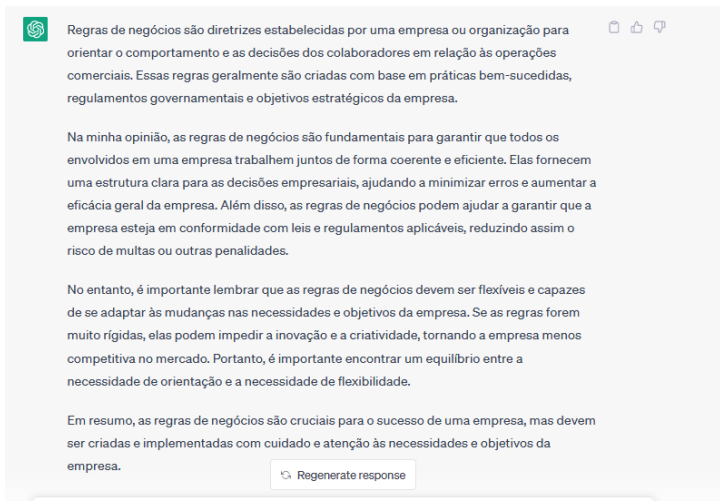

Marcos Vinícius - AI-APW-01
As Regras de Negócio são as regulamentações para as operações do negócio de uma empresa. Eu acho muito importante a aplicação dessas regras pois, dessa forma, a empresa consegue facilitar a realização de objetivos, a satisfação do objetivo, o gerenciamento de recursos e manter um padrão favorável ao negócio.
Nas áreas de Tecnologia da Informação, entender as regras de negócio é um papel fundamental para definir o escopo de um projeto para modelar um sistema que irá suprir as necessidades de forma adequada. Com isso, é possível automatizar os processos que cumprem com as regras de negócio e, por fim, ampliando e acelerando os objetivos e satisfação da empresa e dos clientes.
